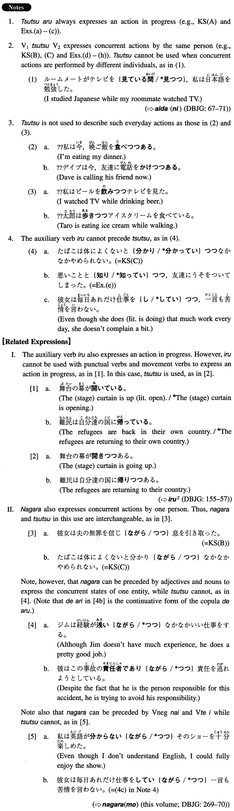

つつ (I. 542)
- (ksa).
- 台風が九州に接近しつつある。
- A typhoon is approaching Kyushu.
- (ksb).
- 彼女は夫の無罪を信じつつ息を引き取った。
- She died believing that her husband was innocent.
- (ksc).
- 煙草は体によくないと分かりつつなかなか辞められない。
- Although I know that smoking is harmful to my health, I just cannot quit.
- (a).
- 新しい本社ビルが完成しつつある。
- The new headquarters building is drawing to completion.
- (b).
- オリンピックの施設が出来つつある。
- The Olympic facilities are being completed.
- (c).
- この大学は現在キャンパスの移転を検討しつつある。
- This university is considering moving its campus now.
- (d).
- 甘い物を食べると太ると分かりつつ、つい手が出てします。
- Although I know that eating sweets makes me gain more weight, I unintentionally reach out for them.
- (e).
- 悪いことと知りつつ、友達に嘘をついてしまった。
- Knowing that it was a bad thing, I told my friend a lie.
- (f).
- 早く論文を書かなければいけないと思いつつ、今日もテレビを見てしまった。
- Although I was thinking that I had to write the paper soon, I watched TV today, too.
- (g).
- 私は父の無事を祈りつつ病院に急いだ。
- I hurried to the hospital hoping that my father was all right.
- (h).
- 彼は最後まで自分の学説が正しいことを主張しつつこの世を去った。
- He died while insisting until the last moment that his theory was correct.
